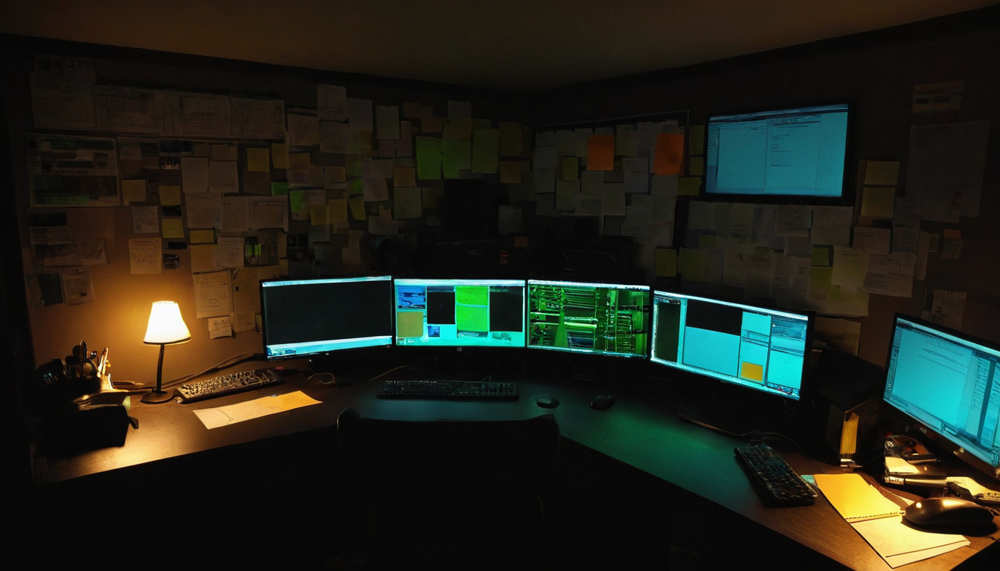

I stopped on this post because it shows how small projects in the Chia ecosystem are finding ways to grow and distribute value. It is not just about the numbers. It is about the community and how people are choosing to support each other.
@Ashen_R0 shared a post about the BepeChad Wiz project. The post notes that 10 XCH were sent to aWizard treasury wallet, that 6 BepeChad Wiz tokens remain, and that auctions are currently live in a Discord server. The post includes links to the Spacescan page for the coin and a photo of the BepeChad Wiz token.
This post is a snapshot of a small but active part of the Chia ecosystem. It shows how token distributions, community-driven projects, and open collaboration are happening outside of the mainstream headlines. For builders and community members, it's a reminder that value can be created and shared in small, meaningful ways. It's also a chance to see how a project like BepeChad Wiz is being supported by the Chia community.
BepeChad Wiz is a community token on the Chia blockchain, built around a character concept with a focus on community engagement and value distribution. The post shows that 10 XCH were sent to aWizard treasury wallet, which funds the project going forward and backs the remaining token auctions.
The BepeChad Wiz project is backed by a small but active group. @SpeechlessZi is one of the community members active around this project, engaged in the same token and auction activity the post describes. These kinds of projects are often driven by individual creators or small teams, and they rely on community support to grow and sustain themselves.
For builders in the Chia ecosystem, this post is a reminder that small projects can have real impact. It also shows how value is being distributed in the community, which is a key part of the Chia model. The people who show up and do the work, even on smaller projects, are driving a lot of what makes this ecosystem interesting.
This post doesn't explicitly state the problem that BepeChad Wiz is solving, but it does show that there's an active community around it. This suggests that the project has found a niche or a need within the Chia ecosystem that others are interested in.
The post is brief, and there's not much information about the BepeChad Wiz project itself. More details would be helpful for people who are interested in learning more or getting involved.
If I were to explore this project further, I would start by looking at the Spacescan page for the coin and the Discord server where the auctions are happening. These are the places where the community is currently active, and they would provide the best insights into what the project is about and where it's headed.
What catches my attention with BepeChad Wiz is how the distribution is being handled. Sending 10 XCH to a treasury wallet before the final token auctions close is a specific, deliberate move. It builds a reserve while the community is active, not as an afterthought. The Discord auction format is also interesting because it keeps distribution social and community-driven rather than just posting on a marketplace and walking away. I do not know where this project ends up, but the approach tells me someone is thinking carefully about how it runs. Worth watching.
I would watch for more updates on the BepeChad Wiz project and see how the community continues to support it. I would also watch for more details about the project and its goals, which could help people understand how it fits into the broader Chia ecosystem.
Source: X post by @Ashen_R0, URL: https://x.com/i/web/status/2079046601364885518, Retrieved on 2026-07-20. External references: Spacescan page for the coin (https://www.spacescan.io/en/coin/0xe8aa95a788f0dcb7d74edffed629261831b09c834c4138c90cfd0073a39d1ec0), photo (https://pbs.twimg.com/media/HNpB3YYXoAAXZwT.jpg).